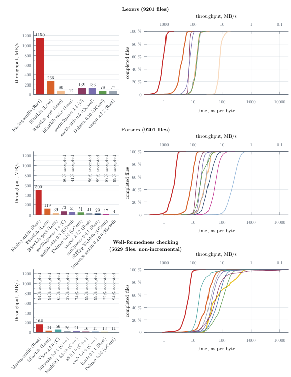
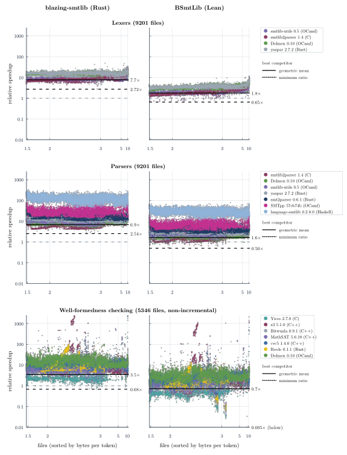

Ports a Rust SMT-LIB parser to Lean (BSmtLib) and proves its optimised lexer and parser match a Lean formalisation of SMT-LIB syntax.
Abstract
SMT-LIB is a standard input format for Satisfiability Modulo Theories (SMT) solvers. However, parsing the format is non-trivial and can become a bottleneck, e.g. when retrieving benchmark metadata or normalising the input for solvers. We introduce blazing-smtlib, a Rust parsing library for SMT-LIB, and BSmtLib, its port to Lean. We outline the library API we designed for composability and extensibility (including non-standard SMT-LIB commands), and discuss our implementation decisions for fast lexing and parsing. We proved that our lexing and parsing with Lean-specific optimisations match our formalised reading of the SMT-LIB syntax. We measured performance on a representative sample from the 2025 SMT-LIB corpus and found that blazing-smtlib is more than 6 times faster on the geometric mean than previous parsing libraries and BSmtLib is faster or comparable to them.
Problem
Parsing SMT-LIB 2 is non-trivial and can bottleneck tasks such as benchmark metadata retrieval and input normalisation. Existing parsing libraries lack extensibility for non-standard commands and are not optimised for speed. Lean had no verified SMT-LIB parser.
Approach
The authors built blazing-smtlib, a zero-dependency push-style streaming Rust library with a composable, extensible API, using batch processing and zero-copy dispatch. They ported it to Lean as BSmtLib, a panic-free library, and applied Lean-specific optimisations. They proved that the ported and optimised lexers and parsers match a Lean formalisation of SMT-LIB syntax. The proofs use only the standard axioms and are checked with leanchecker and nanoda.
Results
On 9,201 files from the 2025 SMT-LIB corpus, blazing-smtlib is more than 6 times faster on the geometric mean than previous parsing libraries. BSmtLib is faster than or comparable to those libraries.

Figure 5 : Measurements of our tools against other lexers, parsers, and executable tools that can be used to check well-formedness of SMT-LIB scripts. The left column shows the geometric-mean throughput. The right column shows the percentage of files that are processed with at least the given throughput, with time-axis differences corresponding to a speedup/slowdown by a ratio. Most tools have a h

Figure 6 : Ratio of time taken by blazing-smtlib , BSmtLib , and the well-formedness checkers against other lexers, parsers, and executable tools. Each file/solver combination is shown separately. The files are sorted by the average number of bytes per token. Speedups tend to be consistent, longer tokens exhibiting slight trends in some comparisons. On files with very long tokens, some tools becom